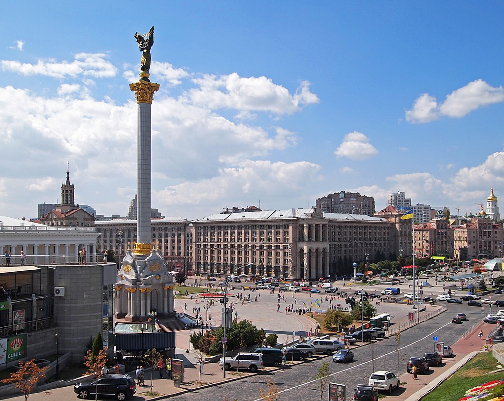

Дата народження: 15.12.2004 Місце народження: м. Миколаїв
Освіта: Миколаївський ліцей № 22; НТУУ "КПІ"
Київ — столиця та найбільше місто України. Розташований у середній течії Дніпра, у північній Наддніпрянщині. Політичний, соціально-економічний, транспортний, освітньо-науковий, історичний, культурний та духовний центр України. Місто розташоване на півночі України, на межі Полісся і лісостепу по обидва береги Дніпра в його середній течії. Найдавніші будови Києва належать до XI—XII століть. Збереглися також будинки XVII—XVIII століть, проте переважають в архітектурному обличчі міста будови другої половини XIX — початку XX століття, виконані у стилі модерну та конструктивізму.
